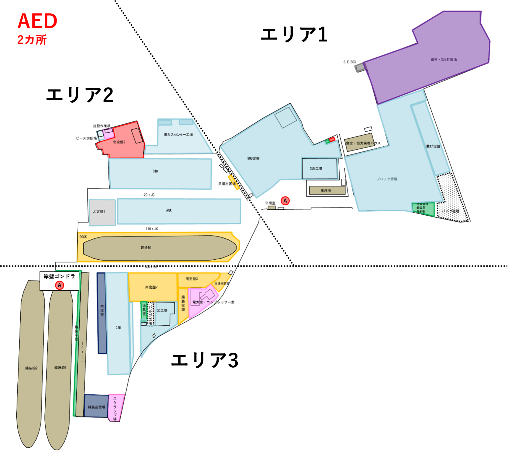
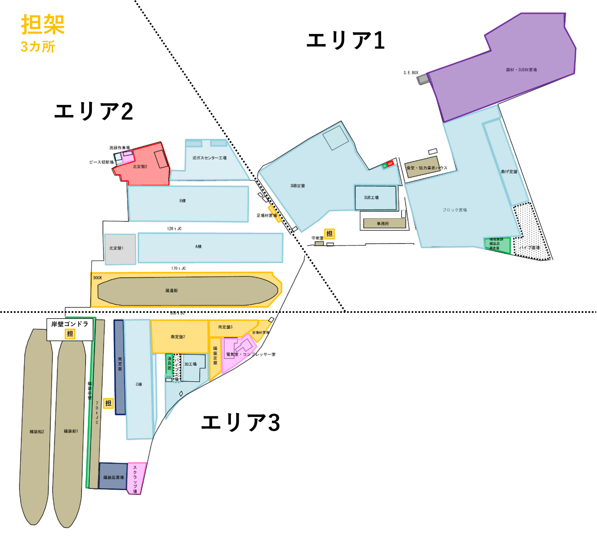
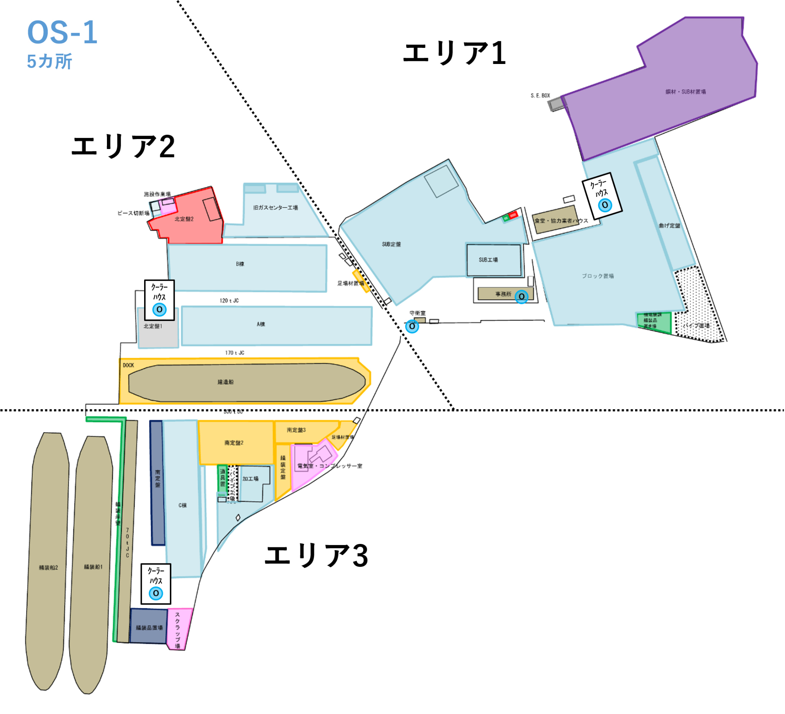

命をツナゲル
緊急入力
意識
呼吸
大量出血
強い痛み
場所
現在の場所
未選択
事故区分
当てはまるものを複数選択できます。
被災者
現在の被災者
未選択
物品を探す
AED

担架

OS-1

① 意識と呼吸
迷ったら「不明」で進められます（後から変更OK）。
意識
呼吸
② 場所（どこか）
場所QR
※ カメラが使えない場合は下で選択/入力できます。
現在の場所
未選択
一覧から選ぶ
③ 事故区分
当てはまるものを複数選択できます。
④ 被災者（誰か）
被災者QR
※ 読めない場合は下の検索で探せます。
現在の被災者
未選択
氏名で探す
⑤ 共有（未確定でもOK）
要約
送信先
※ 送信先範囲は「管理＞連絡先」で変更できます。
状況を選択してください
※ 状況と所属に応じて、連絡先・文面を自動作成します。
所属を選択してください
誰が（対象者）
※ 手入力せずに探せるよう、読み（かな）で絞り込みます。
部位を選択してください
出血・痛みの部位をタップしてください。
選択中
未選択
救急要請
救急要請中
（デモ：実際の救急要請は行いません）
※ 送信内容のプレビューは表示しません（緊急事態の想定）。
判断結果
状況-
所属-
対象者-
詳細-
送信内容（プレビュー）
宛先
-
件名
-
本文
-
※ ブラウザから自動送信はできないため、メールアプリに文面を引き継ぎます（mailto）。
管理画面
パスワードで保護されています。
会社（所属）
追加
共通連絡先（部署等）
送信先範囲（チェック）
職員（対象者）
追加
場所（QR対応）
周囲のQRから「どこか」を即時特定するための一覧です。QRの内容（文字列）を登録してください。
追加
状況と文面
状況ごとに「推奨表示文」や、緊急/様子見の送信先（部署）を調整できます。
パスワード変更
設定の入出力
※ 端末内（localStorage）に保存されます。共有したい場合はJSONを書き出してください。